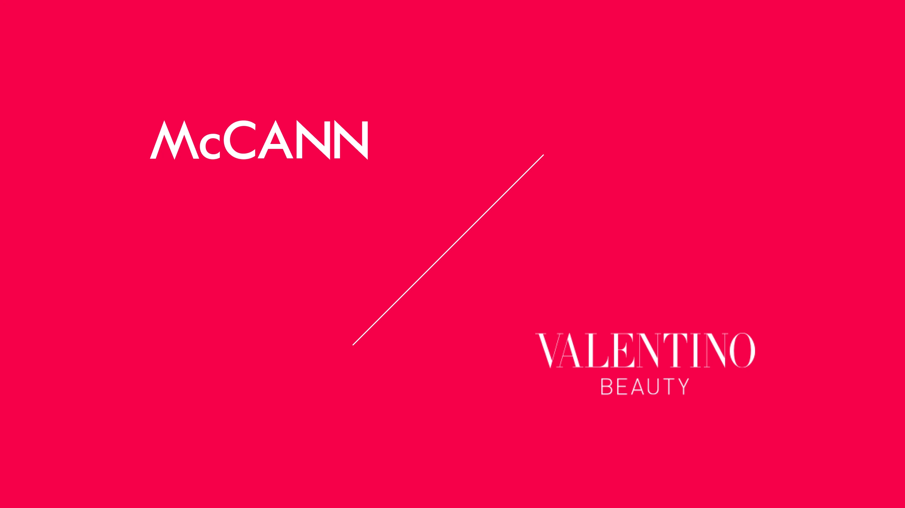
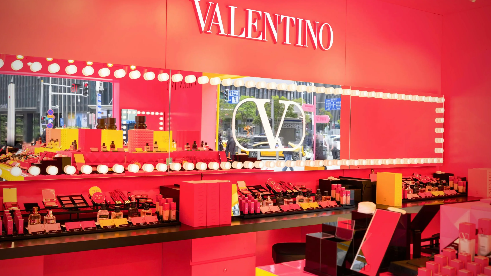
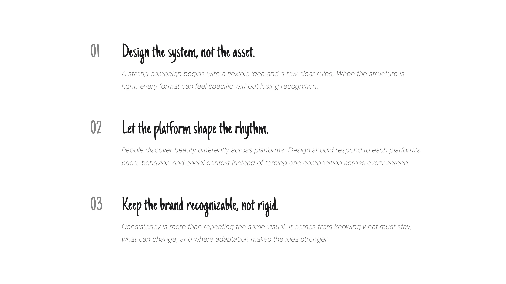

DIGITAL DESIGN · 2021
Valentino Beauty
Valentino Beauty’s first entry into China needed more than a digital campaign. It needed a launch system that could carry the brand into a new market across screens, social platforms, and physical touchpoints.
Our team shaped the launch across TikTok, Rednote, WeChat, and Weibo, while also supporting the opening event at Shanghai Xintiandi with the physical materials that brought the campaign into the room.
- Role
- Digital Designer
- Scope
- Integrated Launch Campaign
- Team
- Creative Campaign Team
Market Launch
Build one launch system for a new market.
Working with the global brand team, we translated one launch direction for the Chinese market—balancing a consistent international identity with local platform behaviors and the opening event at Shanghai Xintiandi. The system moved across TikTok, Rednote, WeChat, and Weibo, while launch materials carried the identity into the room.

TikTok
Give the campaign a faster rhythm.
TikTok compresses the story into a few seconds. The design keeps the visual signature intact while sharpening the opening and giving every frame a clearer beat.
Rednote
Make discovery feel immediate.
Rednote turns browsing into a visual ritual—moving from mood to product in a format that feels tactile, saveable, and easy to share.
Bring discovery into the conversation.
WeChat carries the campaign into a more personal space, connecting visual inspiration, product context, and shareable moments within the conversations people already return to.
Let the system travel through the feed.
Weibo extends the campaign through repeatable posts that balance recognition with enough structure to stand on their own.
Impact
Make the first impression feel coherent.
By connecting global direction with local expression, the launch gave Valentino Beauty a coherent first presence in China—from platform discovery to the opening event at Shanghai Xintiandi.
Global consistency, local relevance, one connected launch.
Reflection
Make one idea feel native everywhere.
Valentino Beauty taught me that a campaign system is not a set of resized assets. It is a shared visual language that adapts to how people discover, watch, save, and share beauty across different platforms. The work made me see digital design as a form of translation: keep the brand recognizable, while redesigning the encounter for every screen.
